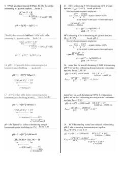

PYpH va pOH qiymatlarini hisoblashga oid kimyoviy masalalar to'plami.
Ushbu hujjat pH va pOH qiymatlarini hisoblashga oid kimyoviy masalalar va ularning yechimlarini o'z ichiga oladi. Unda kislota va asoslarning dissotsiyalanishi, eritmalarni aralashtirish hamda konsentratsiyalarni aniqlash bo'yicha amaliy misollar keltirilgan.